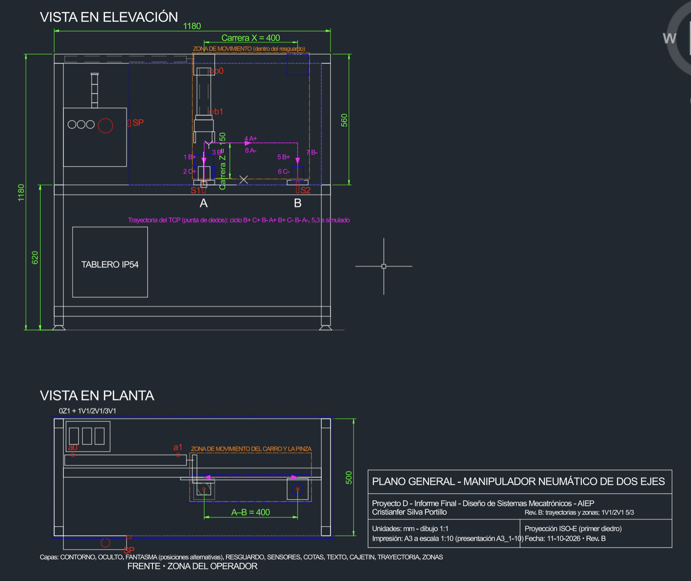
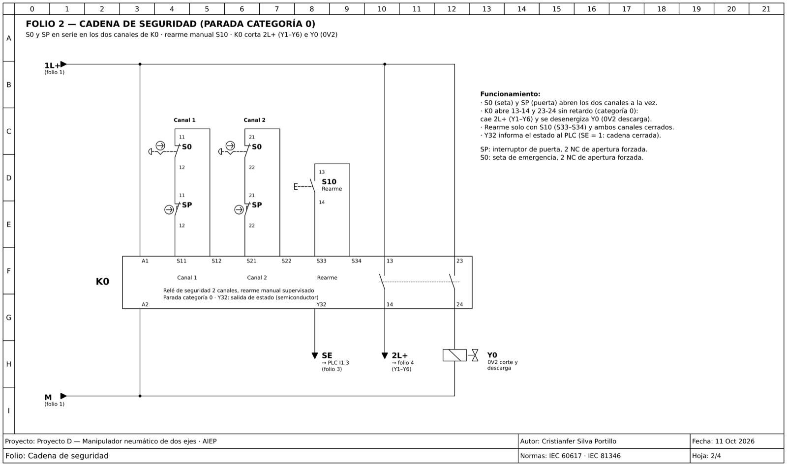
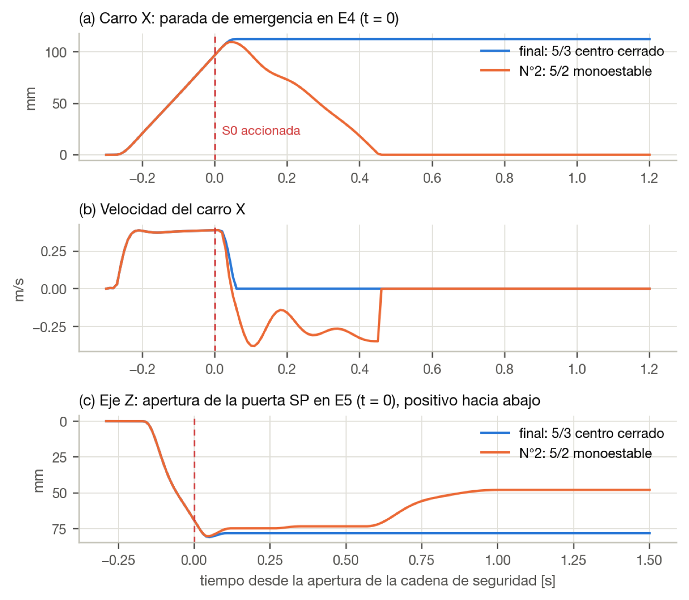
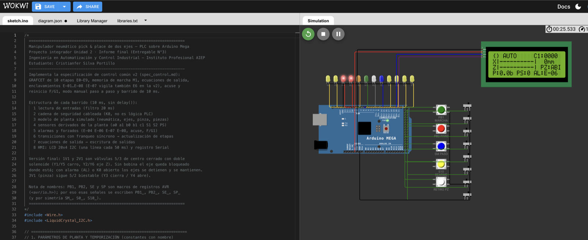

Diseño completo de un manipulador cartesiano que automatiza el traslado de piezas entre un torno CNC y una estación de inspección: requerimientos, mecánica, neumática, control secuencial, cadena de seguridad y validación en simulación.
En una célula de mecanizado, un operador traslada a mano cada pieza de acero (Ø50 × 60 mm, 0,93 kg) desde el torno hasta la inspección, a 400 mm de distancia.
18 ± 4 s por traslado: cerca del 30 % del ciclo de la célula, sin agregar valor.
2 % de piezas dañadas por manipulación.
Riesgo ergonómico: movimiento repetitivo con carga, aristas vivas y pieza caliente.
Datos del caso de estudio planteado en la asignatura Diseño de Sistemas Mecatrónicos.
2 · La solución
Un manipulador cartesiano sobre pórtico de aluminio: un cilindro horizontal (eje X, Ø32 × 400) mueve un carro guiado, del que cuelga un cilindro guiado vertical (eje Z, Ø25 × 150) con una pinza paralela de mordazas en V.

Plano general en AutoCAD: elevación y planta, carreras, sensores, trayectoria del ciclo y zona protegida.
Requerimientos trazables
26 requerimientos funcionales, de desempeño, seguridad, restricción e interfaz, cada uno vinculado a un componente y a una prueba.
Dimensionamiento
Fuerza de agarre de 168 N con factor de seguridad 2, verificada también a 5 bar; consumo de aire de 6,8 NL por ciclo.
Decisión clave
Control por PLC en lugar de neumática pura: permite contar piezas, diagnosticar fallas, enclavar movimientos y operar paso a paso.
3 · Control y seguridad
Control secuencial
GRAFCET (IEC 60848) de 10 etapas que ejecuta la secuencia B+ C+ B− A+ B+ C− B− A−.
Ninguna etapa avanza sin que el sensor confirme el movimiento anterior.
8 enclavamientos (E‑01 a E‑08): presión baja, nido ocupado, fallo de agarre, apertura fuera de destino, emergencia, vigilancia de tiempo y caída de presión.
Modo manual paso a paso y rearme supervisado.
Seguridad independiente del PLC
Seta de emergencia y puerta enclavada en serie sobre un relé de seguridad de 2 canales.
Parada de categoría 0: corta las bobinas y descarga el aire sin depender del programa.
Antirretornos pilotados para que la pieza no caiga ante pérdida de presión.
Bloqueo y consignación para mantenimiento.

Cadena de seguridad en QElectroTech (IEC 60617): S0 y SP en serie sobre los dos canales del relé K0, con rearme manual.
4 · Validación en simulación
Desarrollé un modelo dinámico en Python que acopla la neumática (presión en cada cámara, caudales por orificio ISO 6358, fugas), la mecánica (masas, rozamiento, topes) y un PLC emulado con barrido de 10 ms. Con él probé 12 escenarios, incluidas fallas.
Ciclo completo: los ejes, la pinza y la etapa activa del GRAFCET avanzan solo con la confirmación de cada sensor. Ciclo de 5,27 s con dispersión de ±0,005 s en 10 repeticiones.
Caída de la red de aire con la pieza sujeta: sin antirretornos pilotados la pieza cae a los 0,56 s; con ellos la fuerza de agarre se mantiene sobre el mínimo de diseño.

Parada de emergencia: con válvulas 5/2 el carro retrocedía 97 mm sin control. La simulación justificó cambiar a 5/3 de centro cerrado, que detiene los ejes donde están.
Lo que la simulación cambió del diseño
Válvulas 5/3 de centro cerrado en los ejes, en lugar de 5/2: los ejes quedan bloqueados ante alarma o emergencia.
Vigilancia E‑07 ampliada a la apertura de la pinza: detecta una pinza trabada en destino.
Reguladores de caudal ajustados a 0,40 m/s (X) y 0,30 m/s (Z): la energía de impacto en el final de carrera del eje X baja un 78 %.
Arranque progresivo confirmado: al volver el aire, la velocidad máxima del carro baja de 1,26 a 0,17 m/s.
5 · Pruébalo tú mismo
La lógica de control completa corre en un Arduino Mega que hace de PLC, con pulsadores, pilotos y una pantalla que muestra la etapa, los ejes y las alarmas. Un banco de pruebas automático verifica la lógica: 72 de 72 comprobaciones correctas.

Tablero interactivo en Wokwi: pulsa ▶, luego MARCHA, y prueba la emergencia o el retiro de pieza.
La pérdida eléctrica y la neumática afectan la sujeción de forma distinta: una se resuelve con la válvula, la otra con antirretornos. Y ninguna se da por resuelta sin medirla.
La seguridad, fuera del programa
Separar la cadena de seguridad del PLC agrega componentes, pero cada función queda en un elemento que se puede probar por separado.
Simular antes de construir
La simulación detectó un retroceso peligroso en emergencia que no era evidente en el papel, y cambió la selección de válvulas.